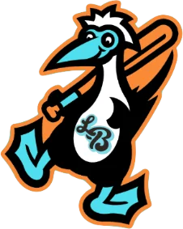

Low Minors · CF
John Draper
- Team
- Long Beach Boobies
- Organization
- San Diego Padres
- Position
- CF
- Bats/Throws
- R/R
- Height/Weight
- 6'2", 191 lb
- Born
- Aug 11, 1980 in La Mirada, CA
- Age
- 21
- Uniform
- #16
AVG/OBP/SLG.351/.415/.459
HR1
RBI4
SB2
OPS+123league = 100
WAR0.4OOTP
2002 batting
| Team | Lg | G | PA | AB | R | H | 2B | 3B | HR | RBI | BB | K | SB | AVG | OBP | SLG | OPS |
|---|---|---|---|---|---|---|---|---|---|---|---|---|---|---|---|---|---|
| LBBo | Low Minors | 3 | 3 | 3 | 0 | 2 | 0 | 0 | 0 | 0 | 0 | 0 | 0 | .667 | .667 | .667 | 1.333 |
| TIJU | High Minors | 14 | 39 | 34 | 5 | 11 | 1 | 0 | 1 | 4 | 3 | 4 | 2 | .324 | .395 | .441 | .836 |
2002 batting, advanced
| Team | Lg | PA | Pit/PA | SH | SF | HBP | IBB | GIDP | CS | OPS+ | ISO | BABIP | BB% | K% | WPA | UBR | WAR |
|---|---|---|---|---|---|---|---|---|---|---|---|---|---|---|---|---|---|
| LBBo | Low Minors | 3 | 2.33 | 0 | 0 | 0 | 0 | 0 | 0 | 241 | .000 | .667 | 0.0% | 0.0% | -0.05 | 0.0 | 0.1 |
| TIJU | High Minors | 39 | 3.92 | 1 | 0 | 1 | 0 | 2 | 0 | 113 | .118 | .345 | 7.7% | 10.3% | 0.18 | -0.6 | 0.3 |
Streaks
Longest hitting streak: 5 games (Apr 6 to Apr 17); current: 1
Longest on-base streak: 6 games (Apr 25 to May 7); current: 1
Batting splits
| Split | G | PA | AB | R | H | 2B | 3B | HR | RBI | BB | K | SB | AVG | OBP | SLG | OPS | ISO | BABIP | BB% | K% |
|---|---|---|---|---|---|---|---|---|---|---|---|---|---|---|---|---|---|---|---|---|
| vs LHP | 8 | 12 | 11 | 0 | 2 | 0 | 0 | 0 | 0 | 1 | 1 | - | .182 | .250 | .182 | .432 | .000 | .200 | 8.3% | 8.3% |
| vs RHP | 12 | 30 | 26 | 5 | 11 | 1 | 0 | 1 | 4 | 2 | 3 | - | .423 | .483 | .577 | 1.060 | .154 | .455 | 6.7% | 10.0% |
| Home | 9 | 21 | 21 | 2 | 8 | 0 | 0 | 1 | 3 | 0 | 1 | 1 | .381 | .381 | .524 | .905 | .143 | .368 | 0.0% | 4.8% |
| Road | 8 | 21 | 16 | 3 | 5 | 1 | 0 | 0 | 1 | 3 | 3 | 1 | .312 | .450 | .375 | .825 | .062 | .385 | 14.3% | 14.3% |
By month
| Month | G | PA | AB | R | H | 2B | 3B | HR | RBI | BB | K | SB | AVG | OBP | SLG | OPS | ISO | BABIP | BB% | K% |
|---|---|---|---|---|---|---|---|---|---|---|---|---|---|---|---|---|---|---|---|---|
| April | 9 | 23 | 20 | 3 | 9 | 1 | 0 | 1 | 4 | 1 | 3 | 1 | .450 | .500 | .650 | 1.150 | .200 | .500 | 4.3% | 13.0% |
| May | 8 | 19 | 17 | 2 | 4 | 0 | 0 | 0 | 0 | 2 | 1 | 1 | .235 | .316 | .235 | .551 | .000 | .250 | 10.5% | 5.3% |
Situational
| Situation | PA | AB | H | 2B | 3B | HR | RBI | BB | K | AVG | OBP | SLG | OPS |
|---|---|---|---|---|---|---|---|---|---|---|---|---|---|
| Bases empty | 23 | 21 | 7 | 0 | 0 | 1 | 1 | 2 | 3 | .333 | .391 | .476 | .867 |
| Runners on | 19 | 16 | 6 | 1 | 0 | 0 | 3 | 1 | 1 | .375 | .444 | .438 | .882 |
| Runners in scoring position | 11 | 9 | 3 | 1 | 0 | 0 | 3 | 0 | 1 | .333 | .400 | .444 | .844 |
| RISP, two outs | 6 | 5 | 2 | 0 | 0 | 0 | 2 | 0 | 0 | .400 | .500 | .400 | .900 |
| Innings 1-3 | 6 | 5 | 0 | 0 | 0 | 0 | 0 | 0 | 2 | .000 | .000 | .000 | .000 |
| Innings 4-6 | 16 | 14 | 4 | 1 | 0 | 0 | 2 | 1 | 0 | .286 | .375 | .357 | .732 |
| Innings 7-9 | 17 | 15 | 7 | 0 | 0 | 1 | 1 | 2 | 2 | .467 | .529 | .667 | 1.196 |
| Extra innings | 3 | 3 | 2 | 0 | 0 | 0 | 1 | 0 | 0 | .667 | .667 | .667 | 1.333 |
Situational splits are rebuilt from every plate appearance in the export (base/out state when the PA began). "RBI" counts runs batted in on that PA.
2002 batting game log
| Date | Opp | Score | Pos | Bat | PA | AB | R | H | 2B | 3B | HR | RBI | BB | K | SB | CS | HBP | GIDP | WPA |
|---|---|---|---|---|---|---|---|---|---|---|---|---|---|---|---|---|---|---|---|
| May 13 | vs SCSh | L 6-10 | PH | 9 | 1 | 1 | 0 | 1 | 0 | 0 | 0 | 0 | 0 | 0 | 0 | 0 | 0 | 0 | 0.021 |
| May 11 | vs SCSh | L 1-4 | PH | 9 | 1 | 1 | 0 | 0 | 0 | 0 | 0 | 0 | 0 | 0 | 0 | 0 | 0 | 0 | -0.128 |
| May 9 | @ EdTr | L 2-3 | PH | 1 | 1 | 1 | 0 | 1 | 0 | 0 | 0 | 0 | 0 | 0 | 0 | 0 | 0 | 0 | 0.060 |
| May 8 | vs OgRa | L 5-9 | LF | 8 | 4 | 4 | 0 | 0 | 0 | 0 | 0 | 0 | 0 | 1 | 0 | 0 | 0 | 0 | -0.110 |
| May 7 | vs NWAR | L 4-6 | LF | 8 | 4 | 4 | 0 | 1 | 0 | 0 | 0 | 0 | 0 | 0 | 0 | 0 | 0 | 0 | -0.020 |
| May 4 | @ ElPa | W 5-2 | C | 4 | 2 | 1 | 1 | 0 | 0 | 0 | 0 | 0 | 1 | 0 | 1 | 0 | 0 | 0 | 0.027 |
| May 3 | @ ElPa | W 4-1 | RF | 9 | 2 | 1 | 0 | 0 | 0 | 0 | 0 | 0 | 1 | 0 | 0 | 0 | 0 | 0 | -0.001 |
| May 2 | @ ElPa | W 5-4 | C | 7 | 4 | 4 | 1 | 1 | 0 | 0 | 0 | 0 | 0 | 0 | 0 | 0 | 0 | 0 | 0.040 |
| Apr 26 | @ ROSE | L 1-3 | RF | 6 | 5 | 3 | 0 | 0 | 0 | 0 | 0 | 0 | 1 | 1 | 0 | 0 | 0 | 0 | -0.198 |
| Apr 25 | @ ROSE | L 1-6 | LF | 6 | 4 | 4 | 0 | 2 | 0 | 0 | 0 | 0 | 0 | 1 | 0 | 0 | 0 | 0 | -0.027 |
| Apr 18 | vs CHIU | W 10-7 | RF | 5 | 1 | 1 | 0 | 0 | 0 | 0 | 0 | 0 | 0 | 0 | 0 | 0 | 0 | 1 | -0.009 |
| Apr 17 | vs CHIU | W 5-4 | C | 9 | 4 | 4 | 0 | 1 | 0 | 0 | 0 | 1 | 0 | 0 | 0 | 0 | 0 | 1 | 0.185 |
| Apr 16 | vs CHIU | W 11-3 | PH | 1 | 1 | 1 | 0 | 1 | 0 | 0 | 0 | 0 | 0 | 0 | 0 | 0 | 0 | 0 | 0.000 |
| Apr 10 | vs GUAD | W 10-7 | RF | 5 | 1 | 1 | 1 | 1 | 0 | 0 | 1 | 1 | 0 | 0 | 0 | 0 | 0 | 0 | 0.038 |
| Apr 7 | @ PEAC | L 5-9 | C | 9 | 3 | 2 | 1 | 1 | 1 | 0 | 0 | 1 | 0 | 1 | 0 | 0 | 1 | 0 | 0.065 |
| Apr 6 | vs ANC | W 7-6 | C | 8 | 4 | 4 | 1 | 3 | 0 | 0 | 0 | 1 | 0 | 0 | 1 | 0 | 0 | 0 | 0.185 |
| Apr 3 | @ LaEl | L 6-7 | C | 0 | 0 | 0 | 0 | 0 | 0 | 0 | 0 | 0 | 0 | 0 | 0 | 0 | 0 | 0.000 |
2002 fielding by position
| Team | Lg | Pos | G | GS | Inn | TC | PO | A | E | DP | FPct | ZR | Arm | Framing | SB | CS | CS% | PB |
|---|---|---|---|---|---|---|---|---|---|---|---|---|---|---|---|---|---|---|
| TIJU | High Minors | C | 6 | 2 | 34.0 | 30 | 27 | 3 | 0 | 0 | 1.000 | 0.5 | 0.0 | 0.1 | 3 | 3 | 50.0% | 0 |
| TIJU | High Minors | RF | 4 | 1 | 15.1 | 1 | 1 | 0 | 0 | 0 | 1.000 | 0.1 | 0.3 | - | - | - | - | - |
| TIJU | High Minors | LF | 3 | 3 | 26.0 | 5 | 5 | 0 | 0 | 0 | 1.000 | -0.5 | 0.6 | - | - | - | - | - |
| TIJU | High Minors | CF | 1 | 0 | 0.1 | 0 | 0 | 0 | 0 | 0 | - | 0.0 | 0.0 | - | - | - | - | - |
ZR (zone rating), Arm and Framing are OOTP's runs-above-average figures. SB/CS/CS% are base stealers against him as a catcher.
Career batting
| Year | Team | Lvl | G | PA | AB | R | H | 2B | 3B | HR | RBI | BB | K | SB | AVG | OBP | SLG | OPS | WAR |
|---|---|---|---|---|---|---|---|---|---|---|---|---|---|---|---|---|---|---|---|
| 2001 | T | Short-A | 58 | 258 | 222 | 34 | 58 | 7 | 0 | 6 | 31 | 22 | 37 | 7 | .261 | .353 | .374 | .727 | 1.6 |
| 2002 | TIJU | High Minors | 14 | 39 | 34 | 5 | 11 | 1 | 0 | 1 | 4 | 3 | 4 | 2 | .324 | .395 | .441 | .836 | 0.3 |
| 2002 | LBBo | Low Minors | 3 | 3 | 3 | 0 | 2 | 0 | 0 | 0 | 0 | 0 | 0 | 0 | .667 | .667 | .667 | 1.333 | 0.1 |
Seasons before 2002 are the player's real-life record, listed under the franchise that holds that history in this universe. "Top level" totals count major-league-level seasons only.
Most frequent matchups pitchers he has faced
| Pitcher | AB | H | HR | AVG |
|---|---|---|---|---|
| Derrick Lewis | 3 | 1 | 0 | .333 |
| Jeremy Cummings | 3 | 0 | 0 | .000 |
| Gavin Floyd | 3 | 0 | 0 | .000 |
| Rene Vega | 3 | 0 | 0 | .000 |
| Salvador Garibay | 2 | 2 | 0 | 1.000 |
| Miguel Asencio | 2 | 1 | 0 | .500 |
| Alfredo Aceves | 2 | 1 | 0 | .500 |
| Vince LaCorte | 1 | 1 | 0 | 1.000 |
| Matt Palmer | 1 | 1 | 0 | 1.000 |
| Ben Shaffar | 1 | 1 | 1 | 1.000 |
| Jim Lira | 1 | 1 | 0 | 1.000 |
| Pete Fisher | 1 | 1 | 0 | 1.000 |
| James Carroll | 1 | 1 | 0 | 1.000 |
| Kurt Birkins | 1 | 1 | 0 | 1.000 |
| Jarrad Lavergne | 1 | 1 | 0 | 1.000 |